Como funcionam o Hub, o site da editora e o app do leitor: livros, produtos, DOI, fichas, e-books, pedidos e o que muda na virada da Pubcon para a Conexão Editora.
O sistema tem três partes que trabalham juntas. Cada uma tem um papel claro, e os dados de um livro nascem num lugar só, o Hub.
Painel interno da equipe. É onde se cadastra o livro completo (importando o PDF com IA), registra o DOI, gera as fichas em PDF, acompanha os pedidos de todos os canais e faz a expedição.
A loja e a vitrine. Mostra a página do livro e de cada capítulo com os dados que o Hub publica, vende pelo WooCommerce, libera os e-books e coleta os leads da ficha.
Para o leitor. Mesmo login do site. Mostra a estante de e-books, lê o PDF (inclusive offline) e acompanha os pedidos de todos os canais.
| Informação | Onde nasce | Onde aparece |
|---|---|---|
| Dados editoriais (resumo, sumário, capítulos, autores, ISBN, licenças) | Hub | Site (páginas do livro e do capítulo), fichas em PDF, app |
| DOI do livro e dos capítulos | Hub → Crossref | Site, fichas, citações |
| Preço, formatos, estoque, carrinho | Loja (WooCommerce); depois da virada, o Hub | Site (caixa de compra) |
| PDF do e-book | Loja (caixa "Livro digital" do produto) | Biblioteca do site e app |
| Pedidos e clientes | Canais de venda (loja, Pagar.me, Amazon) | Hub (central e expedição) e app |
| Leads da ficha | Site (pop-up da ficha) | wp-admin, com exportação CSV |
Hoje existem duas lojas no ar. A Pubcon (novo.pubcon.com.br) continua sendo a loja ativa, com os clientes e os pedidos. A loja nova (conexaoeditora.com.br) já está pronta, mas fica oculta dos buscadores até a virada.
| Assunto | Hoje (antes da virada) | Depois da virada |
|---|---|---|
| Loja ativa | Pubcon (novo.pubcon.com.br) | Conexão Editora (conexaoeditora.com.br) |
| Pedidos no Hub | Lidos da Pubcon, além de Pagar.me e Amazon | Lidos da loja nova, além de Pagar.me e Amazon |
| Produtos no Hub | Catálogo congelado em 29/09/2026 (66 livros, da migração). Produtos criados depois na loja nova não aparecem | Iguais à loja nova, atualizados sozinhos |
| Criação de produto | No wp-admin da loja nova | No Hub (o Hub cria e atualiza o produto na loja) |
| Páginas dos livros, DOI, fichas | Já funcionam no site novo | Sem mudança |
O livro do primeiro DOI está à venda na loja nova (produto com E-book, Impresso e Combo). Como o catálogo de Produtos do Hub parou em 29/09, ele não aparece na busca de Produtos do Hub. O "Atualidades em Ultrassonografia" que aparece lá é outro livro (o volume 1, "Da Propedêutica ao Relatório").
Isso não atrapalha a venda nem o DOI: a página do livro no Hub liga a compra direto ao produto da loja nova, na etapa Comercialização.
Os pedidos ainda vêm da Pubcon e cada pedido aponta para um produto. Se o Hub passasse a ler os produtos da loja nova antes da virada, os pedidos da Pubcon ficariam sem produto correspondente (e a expedição perderia peso e medidas). Por isso a decisão foi esperar a virada e fazer a troca de uma vez.
São duas coisas diferentes que andam juntas. Entender isso evita cadastro pela metade.
É o item de venda: título, preço, formatos (Impresso, E-book, Impresso + E-book), estoque, peso e medidas para o frete, e o PDF do e-book.
Sozinho, não tem resumo científico, sumário, capítulos, autores com afiliação, ficha nem DOI.
É o cadastro editorial completo: resumo, palavras-chave, sumário, capítulos (com autores, ORCID e afiliação), ISBNs, licenças Creative Commons, referências, fichas em PDF e, se quiser, DOI.
É ele que monta a página completa no site.
Todo livro deve ser cadastrado no Hub, com ou sem DOI. Um produto criado só na loja aparece no site com o básico (capa, preço, descrição), mas sem sumário, capítulos, ficha e citação. Depois da virada, a criação do produto também passa para o Hub.
| Caminho | Quando usar | Como |
|---|---|---|
| A. Importar o livro direto (recomendado) | Livro novo, com o PDF em mãos | Hub → Importações (IA) → enviar o PDF. A IA monta livro, pessoas, capítulos e resumos. Depois de revisar e integrar, o livro é associado ao produto na etapa Comercialização. |
| B. Partir de um produto que já existe | Produto que já está no catálogo do Hub e ainda não tem livro | Hub → Produtos → abrir o produto → Cadastrar sumário e capítulos. O Hub cria o livro sem DOI já ligado ao produto; em seguida, Importar sumário e capítulos do PDF ou preencher à mão. |
O DOI é uma opção do livro, não o objetivo do cadastro. No livro, a chave Registrar DOI na Crossref (etapa Identificadores e DOI):
O fluxo completo, do PDF até a página no site.
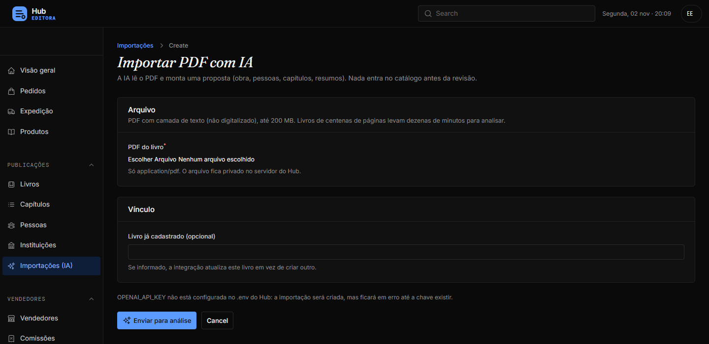
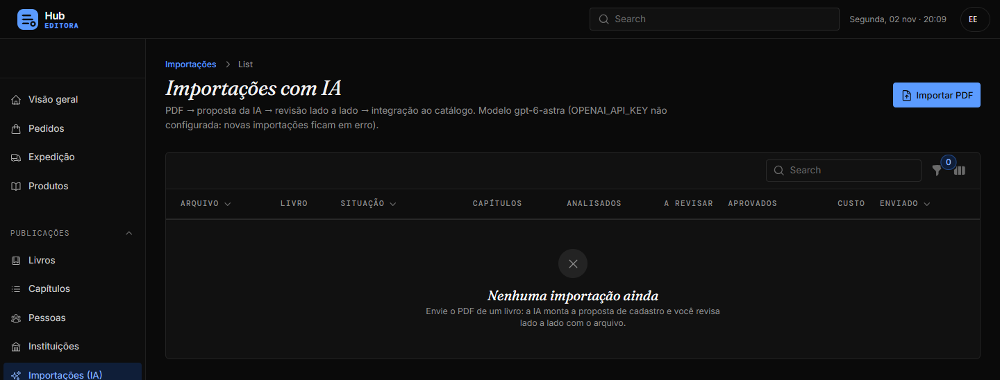
Depois de integrado, o livro tem uma página com tudo: situação editorial, DOI, custo estimado do DOI, identificadores, capítulos, fichas e as ações (Editar, Ver página, Republicar no site, Tirar de catálogo, Registrar DOI, Gerar ficha, Regenerar e publicar fichas).
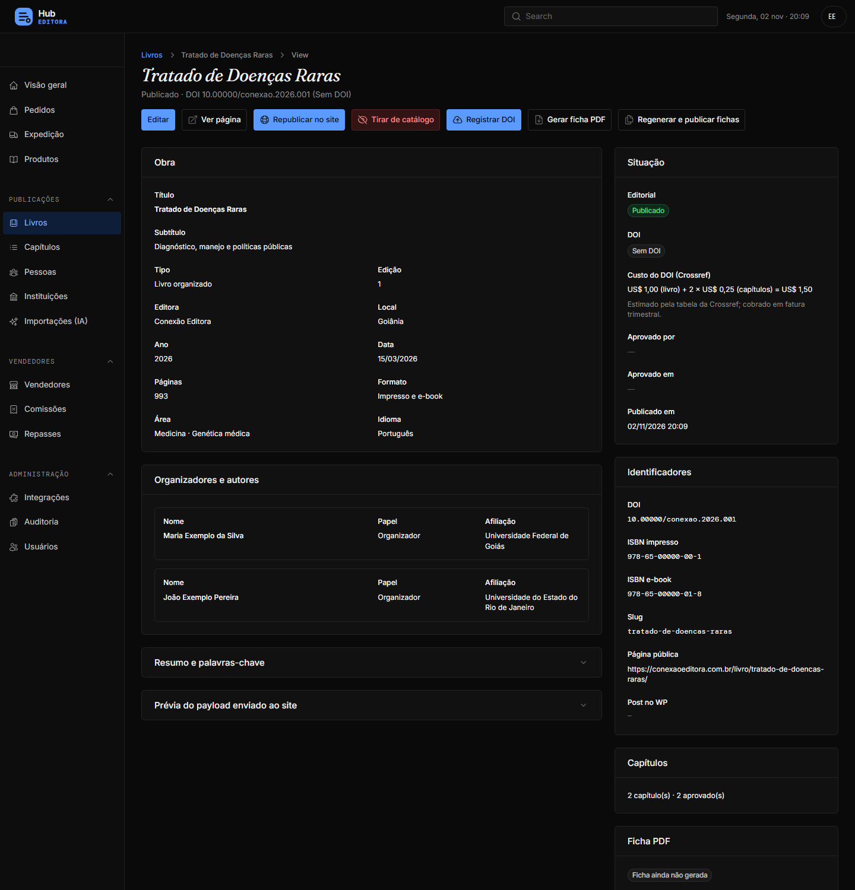
As fichas (do livro e de cada capítulo) seguem o layout do Diego: faixa azul com a capa, resumo, sumário, dados bibliográficos, referências (ABNT, APA, Vancouver) e os sete cartões Creative Commons, com a licença atribuída em destaque. São geradas e enviadas ao site na publicação. Se algo mudar no livro, use Regenerar e publicar fichas.
A capa vem do produto da loja (o site devolve o endereço da imagem na publicação). Se a capa não baixar naquele momento, a ficha sai sem ela e é refeita sozinha na próxima geração.
A lista de Produtos é o catálogo que o Hub usa para os pedidos e a expedição: formatos, peso e medidas (para o frete), estoque, vendedor e o livro ligado.
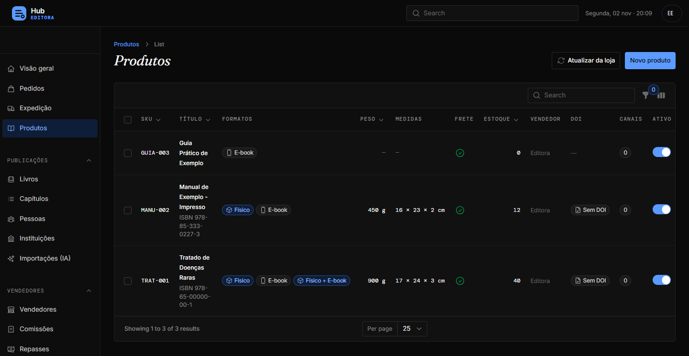
No quadro Sumário, capítulos e DOI, o produto sem livro mostra o botão Cadastrar sumário e capítulos. Ele cria o livro sem DOI, com o título (sem o formato) e o ISBN do produto, e abre o livro para completar.
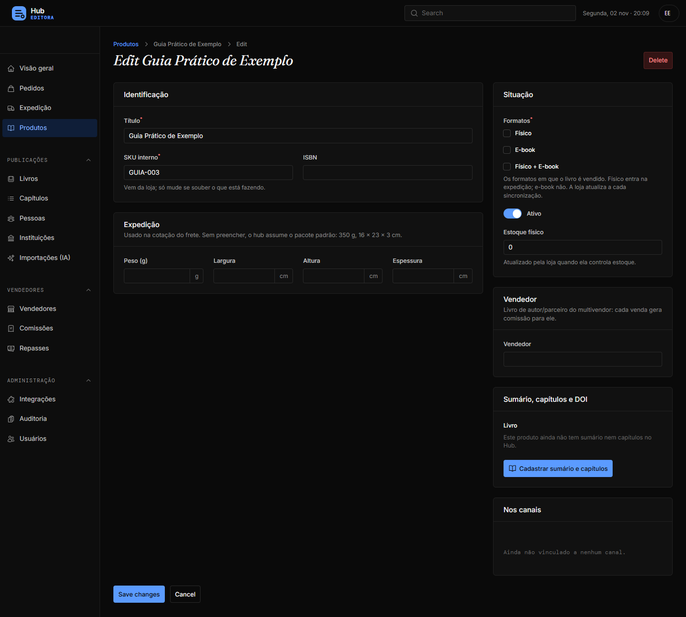
Com o livro ligado, o quadro mostra o livro, o DOI, a situação na Crossref e a etapa, e oferece Importar sumário e capítulos do PDF (abre a importação já apontando para esse livro) e Editar sumário e capítulos.
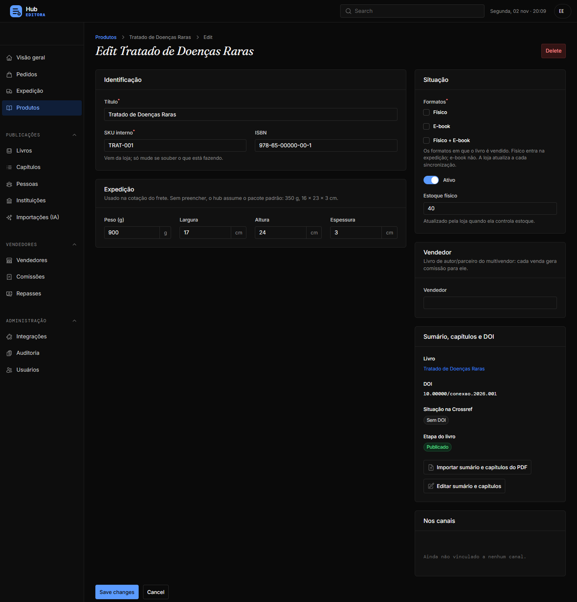
Esses botões valem para os produtos que já estão no catálogo do Hub. Para um livro da loja nova que ainda não está lá (como o Atualidades volume 2), o caminho é o A: importar o livro e associar ao produto na etapa Comercialização.
O DOI é um endereço permanente do livro e de cada capítulo. O Hub monta o XML, envia à Crossref e acompanha o resultado.
| Registro | Obra atual (ano corrente ou 2 anteriores) | Obra antiga |
|---|---|---|
| Livro (título) | US$ 1,00 | US$ 0,15 |
| Capítulo | US$ 0,25 | US$ 0,15 |
| Atualização de DOI já registrado | Grátis | |
Exemplo: um livro deste ano com 20 capítulos custa US$ 1,00 + 20 × US$ 0,25 = US$ 6,00. O Hub mostra essa conta na página do livro e na confirmação do registro. A Crossref anunciou preços menores a partir de 2027; o valor fica numa configuração do Hub, fácil de atualizar.
Uma página só para todo livro, com ou sem DOI, no layout do Figma. Os blocos de DOI, capítulos e citação aparecem quando o livro tem esses dados.
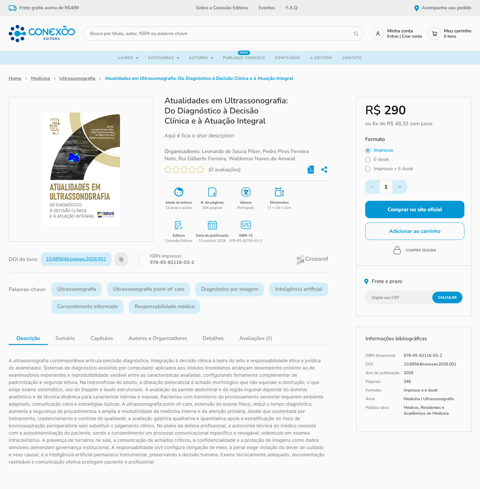
Cada capítulo tem página própria (destino do DOI do capítulo): número e DOI, título, autores com ORCID, ações (Favoritar, Compartilhar, PDF da ficha, Citar), detalhes, "Como citar" nos cinco formatos e os autores com instituição. À direita, o livro, a compra, as informações bibliográficas e a lista de capítulos.
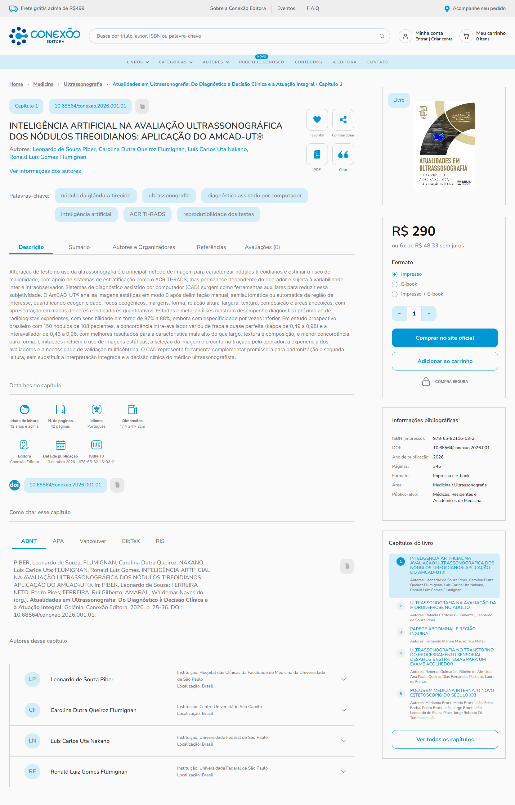
Ao clicar no ícone de PDF (no livro ou no capítulo), o leitor vê um pop-up pedindo nome e e-mail, com o aceite da política de privacidade (obrigatório) e a opção de receber novidades. Ao enviar, a ficha abre numa aba nova por um link que vale uma hora.
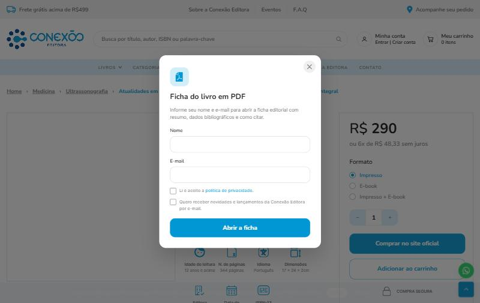
Os PDFs ficam numa pasta protegida, com nome impossível de adivinhar; ninguém baixa a ficha sem passar pelo cadastro. Cada lead registra qual livro ou qual capítulo foi aberto.
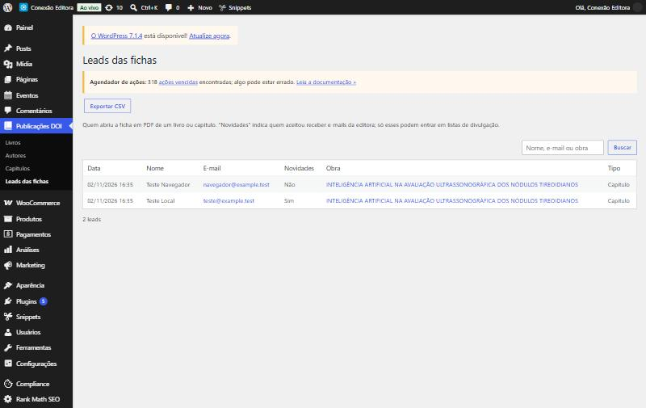
Só quem marcou "Quero receber novidades" pode entrar em listas de divulgação (coluna Novidades = Sim). Os demais deram o e-mail apenas para abrir a ficha.
O arquivo do e-book fica no produto da loja, numa área protegida. Só lê quem tem direito, no site e no app.
Livros antigos ainda podem usar o flipbook (pasta legada); quando o PDF é enviado, vale o PDF.
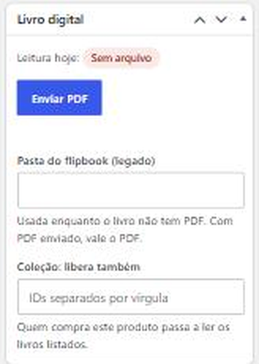
Como as vendas de e-book ainda acontecem na Pubcon, os leitores da Pubcon continuam lendo por lá. Na virada, as compras e os acessos são migrados para a loja nova (a migração já foi ensaiada em 28/09).
Um código só para web (conexaoeditora.com.br/app), Android e iOS. O login é o mesmo do site. As versões das lojas de aplicativos estão em revisão.
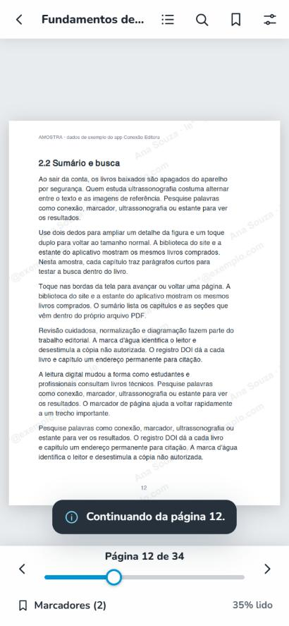
Prints do modo de demonstração do app (dados de exemplo).
A aba Pedidos mostra os pedidos dos últimos 24 meses de todos os canais, com a linha do tempo (aguardando pagamento → pago → em separação → a caminho → entregue) e o rastreio.
Como o Hub acha os pedidos pelo e-mail, o app só mostra os pedidos de outros canais quando o leitor confirma o e-mail (código de 6 dígitos ou redefinição de senha). Sem isso, mostra só os pedidos da própria conta na loja. Pedidos da Amazon raramente aparecem, porque a Amazon mascara os e-mails.
Todos os pedidos, de todos os canais, ficam numa central só no Hub, com a mesma situação padronizada.
| Canal | Como chega ao Hub | Observação |
|---|---|---|
| Loja (WooCommerce) | Aviso automático (webhook) a cada pedido, mais sincronização periódica | Hoje é a Pubcon; depois da virada, a loja nova |
| Pagar.me | Páginas de venda (landing pages) | Pedidos feitos fora da loja |
| Amazon | Integração com a Amazon Seller | Livro físico; aprovação da SP-API pendente |
Pedido só de e-book não passa pela expedição: com o pagamento confirmado, o livro aparece na estante do site e do app.
Livros de autores parceiros têm vendedor no Hub (menu Vendedores): cada venda gera comissão e os repasses são feitos pelo Hub. O vendedor tem um portal próprio, sem dados dos clientes.
A virada troca a loja ativa da Pubcon para a Conexão Editora. Ela já foi ensaiada (28/09) e desfeita a pedido (29/09), até existir a página de transição e a loja nova estar conferida.
A ideia combinada é apagar e recadastrar os livros da loja nova antes da virada, já com peso e medidas (hoje 14 produtos estão sem medidas no Hub) e incluindo livros só de vitrine. Clientes e pedidos não são afetados, porque ainda estão na Pubcon.
| Item | Situação |
|---|---|
| Produto do Atualidades (volume 2) na loja nova | Botão "Comprar no site oficial" vindo de um link externo antigo do produto; descrição curta ainda provisória; faltam imagens de amostra. Ajuste no wp-admin pela equipe da loja. |
| DOI em produção | Crossref em homologação até a aprovação do roteiro de testes. |
| Peso e medidas | 14 produtos sem medidas no Hub (afeta o frete). |
| Melhor Envio | Carteira sem saldo bloqueia a geração de etiquetas. |
| Amazon | Aguardando a aprovação da SP-API. |
| App nas lojas | Versão 1.0.0 em revisão na Apple e no Google. |
| Hub cria o produto na loja | Depois da virada. |
| Termo | Significado |
|---|---|
| Hub | Painel interno (hub.pubcon.com.br) de cadastro, pedidos, expedição e DOI. |
| DOI | Identificador permanente de uma publicação (ex.: 10.68564/conexao.2026.001), registrado na Crossref. |
| Crossref | Entidade que registra os DOIs e cobra por registro. |
| Ficha | PDF editorial do livro ou do capítulo, aberto pelo ícone de PDF no site depois do cadastro do leitor. |
| Lead | Nome e e-mail de quem abriu uma ficha, com a obra aberta. |
| Produto | Item de venda na loja (preço, formatos, estoque, PDF do e-book). |
| Livro | Cadastro editorial completo no Hub (resumo, sumário, capítulos, autores, ficha, DOI opcional). |
| Comercialização | Etapa do livro no Hub que liga cada formato ao produto da loja. |
| Virada | Troca da loja ativa da Pubcon para a Conexão Editora. |
| Homologação | Ambiente de teste da Crossref: nada é registrado de verdade nem cobrado. |